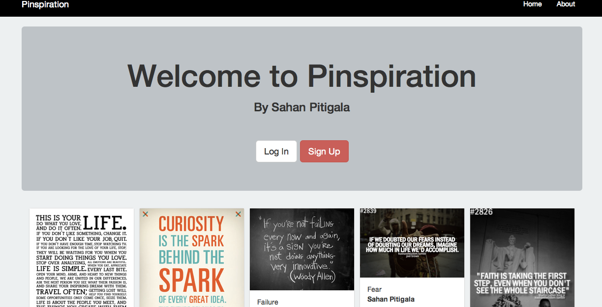
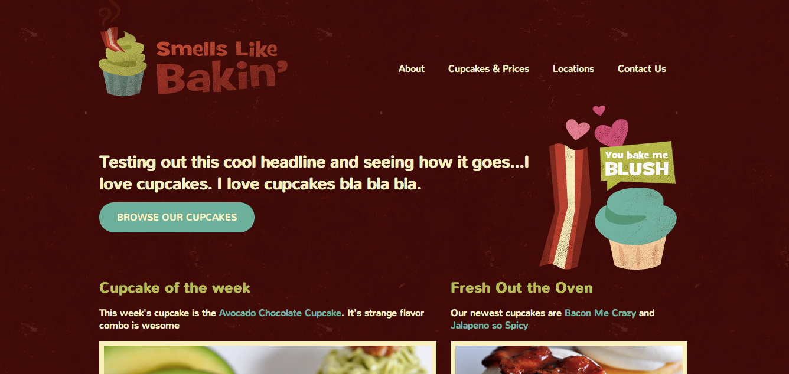

I started CardboardClass.com after seeing a need for affordable classroom space. It was featured and promoted by Skillshare as a resource for their growing base of teachers. The site is based on a heavily customized wordpress template.
Pinspiration is a Pinterest clone built using Rails. This project was the result of the One One Month Rails tutorial
Smells Like Bakin' is a simple static website that was the result of a HTML/CSS tutorial by Treehouse